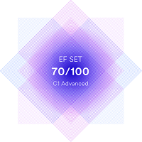

For about 10 years I work as system administrator in Brest State A.S. Pushkin University. It’s a cool job, but now I want to change direction in IT. I want users could see result of my job by their eyes.
I would make huge work to learn JS and React.
Given a non-negative integer n, write a function to_binary/ToBinary which returns that number in a binary format.
function toBinary(n){
var x;
x='';
while (n!=0) {
x=n%2+x;
n=Math.trunc(n/2);
}
return Number(x);
}
Courses:
English - Intermediate/Upper-Intermediate

Russian - Native speaker